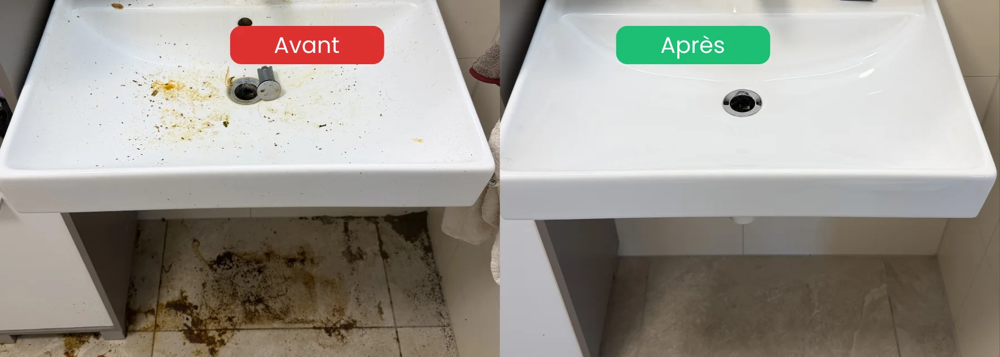

- Nettoyage intensif : intervention en profondeur quand un nettoyage courant ne suffit plus
- Situations couvertes : logement encrassé, laissé à l'abandon, après hospitalisation, après décès
- Notre force : réponse sous 24h, intervention possible sous 48h, y compris le weekend
- Discrétion totale : véhicules sans marquage si demandé, aucune information partagée
- Zone couverte : toute la Broye vaudoise et fribourgeoise depuis Payerne
Qu'est-ce qu'un nettoyage intensif ?
Un nettoyage intensif — parfois appelé nettoyage en profondeur ou grand nettoyage complet — va bien au-delà de l'entretien courant. Il s'impose quand l'état du logement ne peut plus être rattrapé par un simple passage de ménage.
Concrètement, voici ce qui distingue un nettoyage intensif d'un nettoyage standard :
| Nettoyage standard | Nettoyage intensif |
|---|---|
| Entretien régulier des surfaces | Traitement des incrustations profondes |
| Passage rapide cuisine et sanitaires | Dégraissage complet hotte, four, joints |
| Aspiration et lavage des sols | Décapage si nécessaire, traitement des moisissures |
| 1 à 3 heures pour un appartement | 1 à plusieurs jours selon l'état |
| Prix au forfait horaire standard | Prix selon état réel, établi après visite |
Ce type d'intervention demande du matériel spécifique, des produits professionnels adaptés et une équipe formée à ces conditions particulières.
Les situations qui demandent un nettoyage intensif
Dans notre expérience sur le terrain dans la Broye, les demandes de nettoyage intensif viennent de situations très concrètes.
Logement laissé à l'abandon
Un appartement ou une maison qui n'a pas été entretenu depuis plusieurs mois ou plusieurs années. Les surfaces sont encrassées en profondeur, les moisissures ont eu le temps de s'installer, les odeurs sont persistantes.
Après une hospitalisation d'un proche
C'est le scénario que nous rencontrons très régulièrement dans la Broye : un parent âgé est hospitalisé, les enfants adultes découvrent en allant chercher ses affaires que le logement n'est plus dans un état acceptable. La situation s'est dégradée progressivement, sans que personne ne le voie venir.
Ces familles ont besoin d'une intervention rapide, discrète et humaine — pas d'un prestataire qui juge ou qui tarde à répondre.
Après un décès
Nettoyer le logement d'un proche après un décès est une épreuve émotionnelle et logistique. Nous intervenons dans ces situations avec le respect et la discrétion qu'elles demandent, en coordination avec la famille et si nécessaire avec Malo Débarras pour un service combiné.
Logement avec accumulation importante
Certains logements ont accumulé des objets, des déchets ou des résidus sur des années. La dégradation est parfois liée à une situation de santé psychique (dépression, isolement) — jamais à un manque de volonté. Notre équipe intervient sans jugement, avec méthode.
Fin de bail dans un état difficile
Certains locataires rendent un logement dans un état très encrassé. Pour le propriétaire ou la régie, un nettoyage intensif est alors indispensable avant de pouvoir relouer.

Comment nous intervenons
Le premier contact
Un appel, un message ou une photo suffisent pour nous décrire la situation. Nous écoutons sans jugement, posons quelques questions essentielles et proposons rapidement une visite ou un échange de photos pour établir le devis.
Nous ne mettons jamais en attente une famille qui découvre une situation difficile.
La visite et le devis
Nous nous déplaçons dans toute la Broye pour évaluer la situation sur place. La visite dure généralement 30 à 60 minutes. À l'issue, nous donnons une fourchette de prix indicative immédiatement, puis envoyons le devis détaillé dans la journée.
Prix fixe, sans surprise. Aucun supplément caché après l'intervention.
L'intervention
Selon l'ampleur de la situation, notre équipe intervient sur 1 à plusieurs jours consécutifs. Les grandes étapes d'un nettoyage intensif :
- Évaluation sur place : identification des zones prioritaires et des risques (moisissures, nuisibles)
- Tri et débarras si nécessaire : en coordination avec vous ou avec Malo Débarras
- Nettoyage en profondeur : surfaces, sols, murs, cuisine, sanitaires
- Désinfection des zones sensibles (WC, joints, poignées, zones humides)
- Dégraissage cuisine et hotte
- Nettoyage final : contrôle qualité zone par zone, photos avant/après
Discrétion totale. Nos véhicules peuvent intervenir sans marquage visible. Aucune information sur votre situation n'est jamais partagée.
Une situation difficile dans la Broye ?
Intervention discrète · Réponse 24h · Sans jugement · Broye VD & FR
Demander un devis confidentiel →Ce que nous couvrons dans la Broye
Malo Nettoyage intervient pour les nettoyages intensifs dans toute la Broye vaudoise et fribourgeoise depuis Payerne.
Broye vaudoise : Payerne, Avenches, Moudon, Cudrefin, Grandcour, Faoug, Corcelles-près-Payerne, Missy, Granges-près-Marnand.
Broye fribourgeoise : Estavayer-le-Lac, Domdidier, Belmont-Broye, Saint-Aubin (FR), Cheyres-Châbles, Delley-Portalban, Gletterens, Vallon, Cugy (FR), Nuvilly, Sévaz, Lully.
Nous intervenons également dans les cantons de Vaud et Fribourg selon la nature et l'urgence de la situation.
Pourquoi Malo Nettoyage dans la Broye
Plusieurs éléments nous distinguent concrètement sur ce type de prestation.
Nous répondons vite — vraiment. Trois mandats de nettoyage intensif sur quatre que nous avons obtenus dans la Broye, nous les avons eu parce que nous étions la seule entreprise à rappeler rapidement. Parfois le samedi, parfois en soirée. La famille en situation de détresse n'attend pas le lundi matin.
Nous ne jugeons pas. Un logement très encrassé cache presque toujours une histoire humaine — dépression, isolement, deuil, maladie. Notre équipe est formée à ces contextes. Personne ne commente, personne ne photographie sans accord, personne ne juge.
Nous sommes ancrés dans la région. Basés à Payerne, nous connaissons la Broye, ses communes, ses régies. Nous ne sommes pas un centre d'appel qui dispatche une équipe anonyme — vous avez un interlocuteur direct, souvent le dirigeant lui-même.
Nous travaillons en famille. Pour les situations qui demandent aussi un débarras, nous coordonnons directement avec Malo Débarras (l'entreprise de notre frère). Un seul contact, deux expertises, une seule intervention planifiée.
FAQ – Nettoyage intensif dans la Broye
Quelle est la différence entre un nettoyage intensif et un nettoyage insalubre ?
Ce sont souvent les mêmes situations, décrites différemment. Le terme « insalubre » est médical et peut sembler stigmatisant. « Nettoyage intensif » décrit mieux ce que nous faisons concrètement : une intervention en profondeur sur un logement très encrassé, quelle qu'en soit la cause. Nous utilisons le terme que vous préférez — ce qui compte, c'est l'intervention.
Intervenez-vous le weekend pour un nettoyage intensif dans la Broye ?
Oui, dans la mesure du possible. La plupart des situations difficiles sont découvertes le weekend — un parent hospitalisé le vendredi soir, une remise de clés le lundi matin. Nous faisons le maximum pour répondre et intervenir rapidement, y compris le samedi et le dimanche.
Faut-il être présent pendant l'intervention ?
Non, pas obligatoirement. Beaucoup de clients nous confient les clés et reçoivent des photos avant/après. Pour les situations sensibles (objets personnels à conserver, présence souhaitée), nous nous adaptons totalement à votre rythme et à vos préférences.
Le nettoyage intensif inclut-il le débarras des objets ?
Pas systématiquement. Le nettoyage intensif traite les surfaces et l'hygiène du logement. Si des objets, meubles ou encombrants doivent être évacués, nous coordonnons avec Malo Débarras pour une intervention combinée débarras + nettoyage. Signalez-le lors du premier contact et nous organisons tout ensemble.
Combien coûte un nettoyage intensif dans la Broye ?
Le prix dépend de la surface, de l'état du logement et des zones à traiter. Nous établissons toujours un devis personnalisé après photos ou visite — jamais un prix au téléphone sans avoir évalué la situation réelle. Nous donnons une fourchette indicative dès la visite, et le prix final est fixe, sans surprise.
En résumé
Un nettoyage intensif dans la Broye, c'est une intervention en profondeur pour les situations qu'un nettoyage classique ne peut pas résoudre : logement encrassé, laissé à l'abandon, après hospitalisation, après décès ou fin de bail difficile. Malo Nettoyage intervient dans toute la Broye vaudoise et fribourgeoise, avec une réponse sous 24h, une discrétion totale et une approche humaine — sans jugement, quel que soit l'état du logement.
- 143 — La Main Tendue : écoute anonyme 24h/24
- CMS (Centre médico-social) : aide à domicile et accompagnement social
- Pro Senectute : soutien aux personnes âgées et à leur famille
- Pro Mente Sana : information et soutien en santé mentale
- Votre médecin traitant : premier interlocuteur de confiance